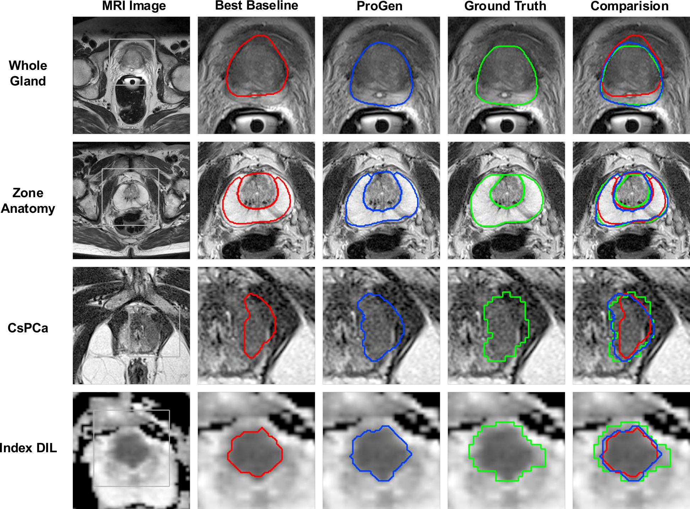
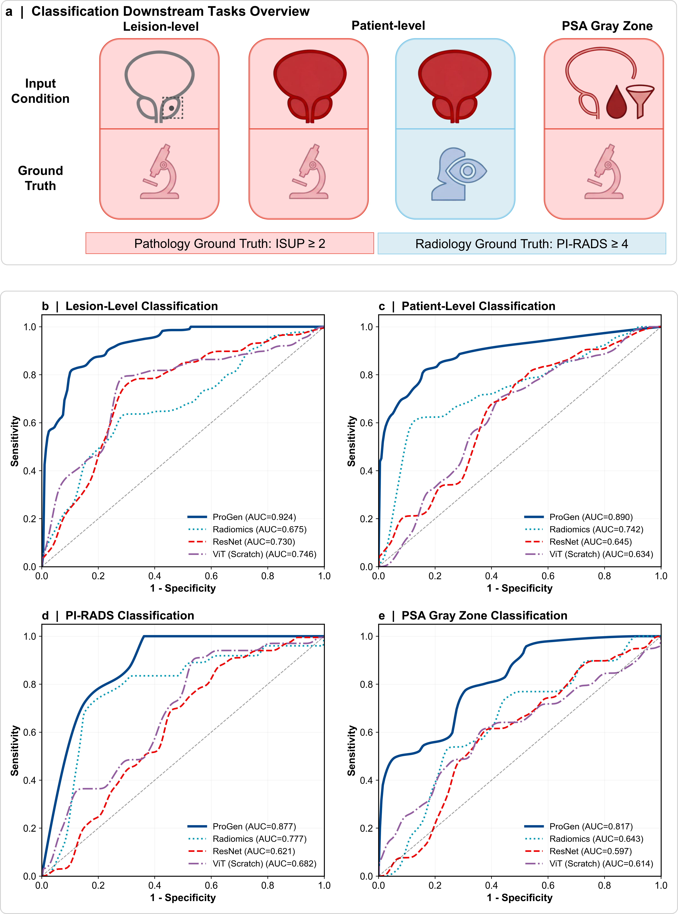
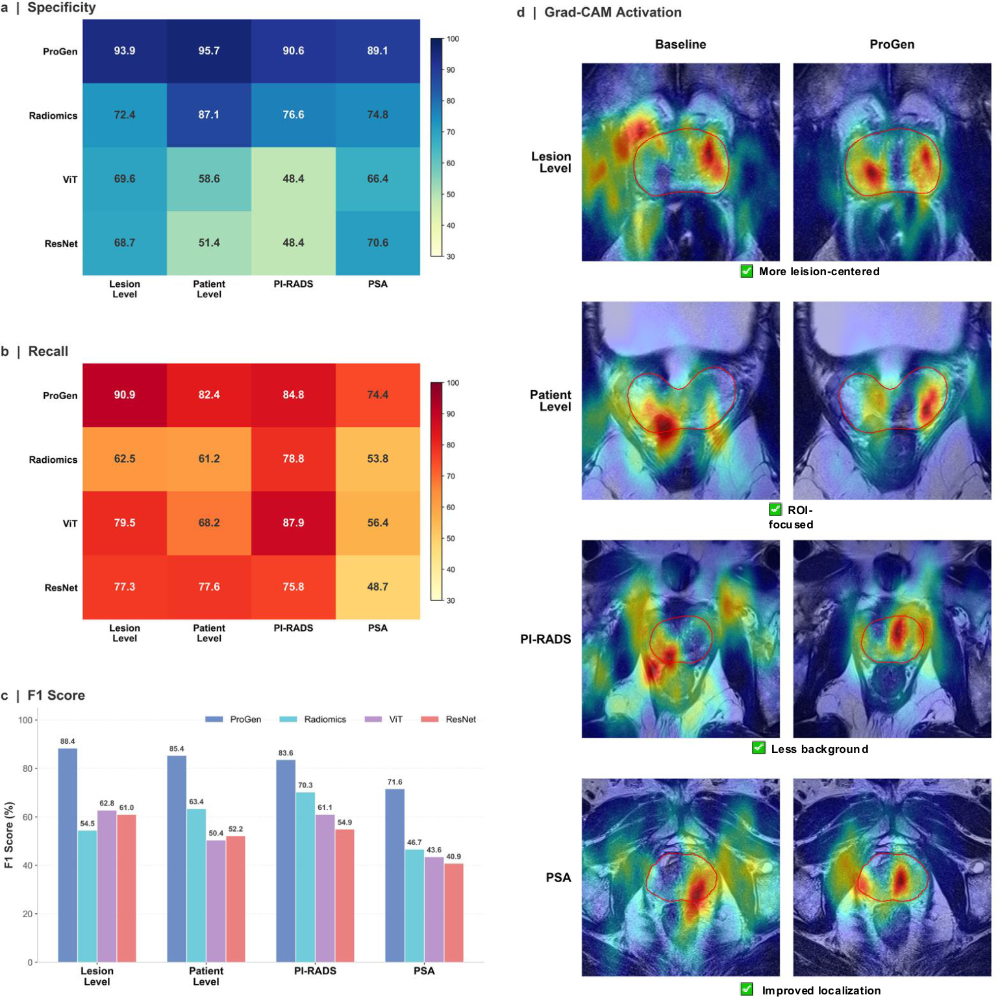

Quantitative Benchmarking

Prostate multiparametric MRI has transformed cancer diagnosis by enabling image-guided risk assessment, yet its interpretation remains challenging because it requires coordinated anatomical localization, lesion delineation and diagnostic classification across heterogeneous imaging sequences. Current medical AI systems are often optimized for isolated tasks and therefore poorly aligned with the sequential reasoning used in clinical prostate MRI assessment. Here we introduce ProGen, an anatomy-guided generalist foundation model for prostate MRI. ProGen is pretrained on Pro-7M, a large-scale consortium comprising 39,587 MRI volumes and over 7 million slices from 27 retrospective datasets across five mpMRI modalities, including T2W, T1W, ADC, DWI and DCE. Using a modality-aware 3D masked autoencoding framework with boundary-preserving and asymmetry-aware priors, ProGen is evaluated across eight spatial and diagnostic tasks. ProGen consistently outperforms supervised baselines, supporting its potential for non-invasive prostate cancer management.



@article{anatomy_guided_prostate_fm_2026,
title={An anatomy-guided generalist foundation model integrates spatial delineation and diagnostic classification in prostate MRI},
author={He, Wenfeng and Wang, Shansong and Safari, Mojtaba and Yang, Xiaofeng},
journal={npj Digital Medicine},
year={2026}
}